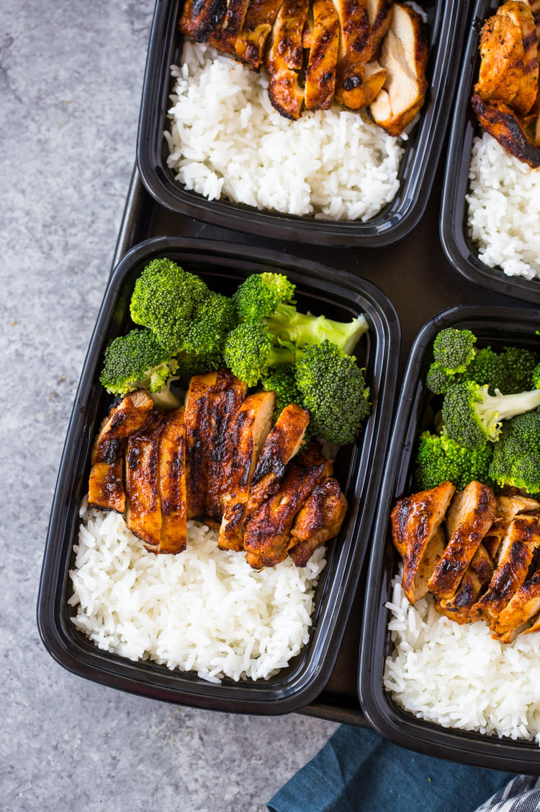

Chicken Rice and Broccoli

Description
Quick skillet chicken, rice, and steamed broccoli all made in under 20 minutes for a healthy meal-prep lunch box that you can enjoy all week long!
Ingredients and Steps
- 2 cups water
- 1 cup jasmine rice
- 3/4 tsp salt
- 4 small-medium boneless and skinless chicken breasts or thighs (4 oz each)
- 1 tsp brown sugar
- 1/2 tsp paprika
- 1/2 tsp cumin
- 1/2 tsp garlic powder
- salt and pepper to taste
- 1 tbsp olive oil
- 2-3 cups broccoli florets
- water for steaming
- Rice: Bring the water to a boil in a medium saucepan. this Stir in the rice; cover and reduce the heat to low. Simmer for 15 minutes until all of the water is absorbed.
- Chicken: Rub chicken with brown sugar, paprika, cumin, garlic powder, salt, and pepper. Heat 1-2 tablespoons oil in a large heavy-duty pan or skillet over medium-high heat.
- Chicken continued: Add the chicken to pan and cook for 5-6 minutes on the first side without moving, until the undersides develop dark grill marks. Flip the chicken breasts using a pair of tongs or a fork and cook the other side for 5-6 minutes. Turn off heat and allow chicken breasts to rest in pan for at least 5 minutes before cutting.
- Broccoli: There are two ways to cook the broccoli. To blanch the broccoli on the stove-top. Boil water in a large pot. Add broccoli florets to pot and blanch for just 1 minute. Remove from the pot. To steam in the microwave: Place broccoli in a microwave-safe bowl and add water 3 tablespoons water to the bowl. Cover with a ceramic plate or plastic wrap. Microwave on high for 3 minutes.
- Assemble: Cut the chicken into slices or small bite-size pieces. Use a 1 cup measuring cup to evenly spoon 1 cup of rice into each (4 total) Top the rice with slices chicken and broccoli florets. Cover and refrigerate for you to 4 days. To reheat microwave on high for 2 minutes or until steaming.